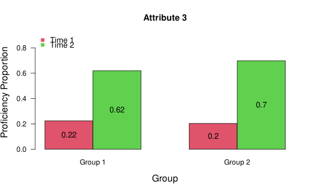
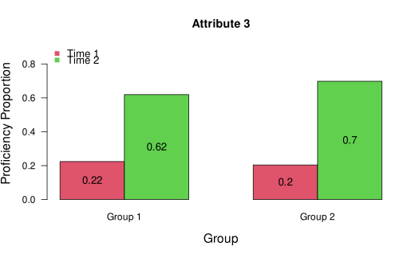

A function to compile results from calibration of the multigroup TDCM (Madison & Bradshaw, 2018).
Arguments
- model
a
gdinaobject returned from themg.tdcmfunction.- num.time.points
the number of time points (i.e., measurement/testing occasions), integer \(\ge 2\).
- transition.option
option for reporting results.
= 1compares the first time point to the last.= 2compares the first time point to every other time point.= 3compares successive time points. Default= 1.- classthreshold
probability threshold for establishing proficiency from examinee posterior probabilities. Default is .50, which maximizes overall classification accuracy. It can be set to a lower value to minimize false negatives (i.e., misclassifying proficient examinees as non-proficient) or set to a higher value to minimize false positives (i.e., misclassifying non-proficient examinees as proficient).
- attribute.names
optional vector of attribute names to include in plots.
- group.names
optional vector of group names to include in plots.
Value
A list with the following items:
$item.parameters: LCDM item parameter estimates from the specified DCM.$growth: proficiency proportions for each time point and each attribute$transition.probabilities: conditional attribute proficiency transition probability matrices$posterior.probabilities: examinee marginal attribute posterior probabilities of proficiency$transition.posteriors: examinee marginal attribute transition posterior probabilities$most.likely.transitions: examinee most likely transitions for each attribute and transition$classifications: examinee classifications determined by the specified threshold applied to the posterior probabilities$reliability: estimated transition reliability metrics for each attribute for the specified transitions. “pt bis” = longitudinal point biserial metric; “info gain” = longitudinal information gain metric; “polychor” = longitudinal tetrachoric metric; “ave max tr” = average maximum transition posterior metric; “P(t>k)” = proportion of examinee marginal attribute transition posteriors greater than k; “wt pt bis” = weighted longitudinal point biserial; “wt info gain” = weighted longitudinal information gain.$att.corr: estimated attribute correlation matrix$model.fit: Several model fit indices and tests are output including item root mean square error of approximation (RMSEA; von Davier, 2005), mean RMSEA, bivariate item fit statistics (Chen et al., 2013), and absolute fit statistics such as mean absolute deviation for observed and expected item correlations (MADcor; DiBello, Roussons, & Stout, 2007), and standardized root mean square root of squared residuals (SRMSR; Maydeu-Olivares, 2013)
Details
Provides a summary of multigroup TDCM results including item parameters, attribute posterior probabilities, transition posterior probabilities, classifications, group-wise growth, group-wise transition probabilities, attribute correlations, several transition reliability metrics, and model fit. Includes longitudinal versions of reliability metrics developed by Templin and Bradshaw (2013) and Johnson and Sinharay (2020).
References
Chen, J., de la Torre, J. ,& Zhang, Z. (2013). Relative and absolute fit evaluation in cognitive diagnosis modeling. Journal of Educational Measurement, 50, 123-140.
DiBello, L. V., Roussos, L. A., & Stout, W. F. (2007). Review of cognitively diagnostic assessment and a summary of psychometric models. In C. R. Rao and S. Sinharay (Eds.), Handbook of Statistics, Vol. 26 (pp.979–1030). Amsterdam: Elsevier.
Johnson, M. S., & Sinharay, S. (2020). The reliability of the posterior probability of skill attainment in diagnostic classification models. Journal of Educational Measurement, 47(1), 5 – 31.
Madison, M. J. (2019). Reliably assessing growth with longitudinal diagnostic classification models. Educational Measurement: Issues and Practice, 38(2), 68-78.
Madison, M. J., & Bradshaw, L. (2018). Evaluating intervention effects in a diagnostic classification model framework. Journal of Educational Measurement, 55(1), 32-51.
Maydeu-Olivares, A. (2013). Goodness-of-fit assessment of item response theory models (with discussion). Measurement: Interdisciplinary Research and Perspectives, 11, 71-137.
Schellman, M., & Madison, M. J. (2021, July). Estimating the reliability of skill transition in longitudinal DCMs. Paper presented at the 2021 International Meeting of the Psychometric Society.
Templin, J., & Bradshaw, L. (2013). Measuring the reliability of diagnostic classification model examinee estimates. Journal of Classification, 30, 251-275.
von Davier M. (2008). A general diagnostic model applied to language testing data. The British journal of mathematical and statistical psychology, 61(2), 287–307.
Examples
# \donttest{
## Example 4: G = 2, T = 2, A = 4
data(data.tdcm04, package = "TDCM")
dat4 <- data.tdcm04$data
qmat4 <- data.tdcm04$q.matrix
group4 <- data.tdcm04$groups
# estimate mgTDCM with invariance assumed and full LCDM
mg1 <- TDCM::mg.tdcm(dat4, qmat4,
num.time.points = 2, rule = "GDINA",
group = group4, group.invariance = TRUE, item.invariance = TRUE)
# summarize results
results1 <- TDCM::mg.tdcm.summary(mg1, num.time.points = 2)
# plot results
TDCM::tdcm.plot(results1)
 
#> [1] **Check the plots window for line and bar plots for group growth proportions.
# estimate mgTDCM without group invariance
mg2 <- TDCM::mg.tdcm(dat4, qmat4,
num.time.points = 2, rule = "GDINA",
group = group4, group.invariance = FALSE, item.invariance = TRUE)
# compare models to assess group invariance
TDCM::tdcm.compare(mg1, mg2)
#> Model loglike Deviance Npars AIC BIC Chisq df p
#> 1 mg1 -37371.96 74743.92 130 75003.92 75710.91 27.92 56 0.9994
#> 2 mg2 -37358 74716 186 75088 76099.54 NA NA NA
# }

#> [1] **Check the plots window for line and bar plots for group growth proportions.
# estimate mgTDCM without group invariance
mg2 <- TDCM::mg.tdcm(dat4, qmat4,
num.time.points = 2, rule = "GDINA",
group = group4, group.invariance = FALSE, item.invariance = TRUE)
# compare models to assess group invariance
TDCM::tdcm.compare(mg1, mg2)
#> Model loglike Deviance Npars AIC BIC Chisq df p
#> 1 mg1 -37371.96 74743.92 130 75003.92 75710.91 27.92 56 0.9994
#> 2 mg2 -37358 74716 186 75088 76099.54 NA NA NA
# }